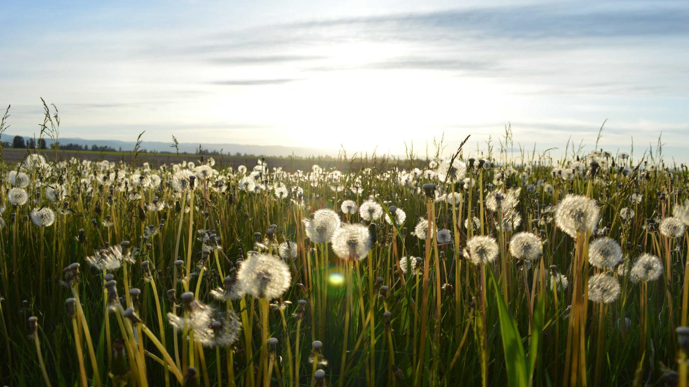

Kindness World Explorers
An after-school programme for elementary students about acts of kindness and the way other cultures practise them.
The programme
Wednesdays when school is in session, from after school until 4:30pm.
$20 a month, snack included.
Acts of kindness, plus cultures and spiritual practices through art and video — memory boxes for Día de los Muertos during Latin American History Month, quilt designs and Black History bingo in February.
DUMMY — how a family registers, whether there is a waiting list, who to contact.